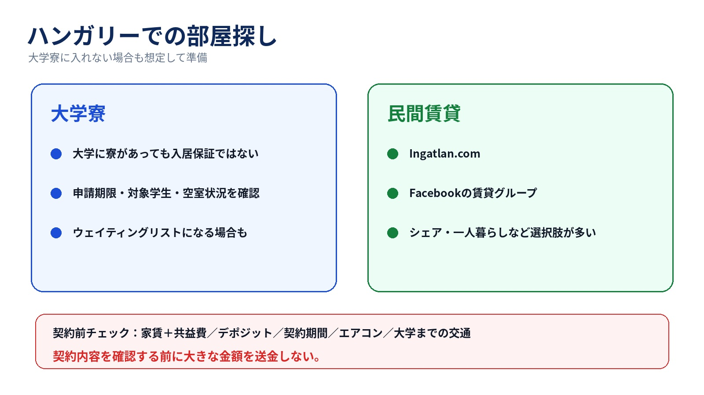

ハンガリー留学では、 大学寮に入る方法と、自分で民間の部屋を探す方法があります。
大学によって、申請期限、学生区分、学年、選考条件、部屋数などが異なります。
また、年度によって空室状況も変わるため、 大学が学生寮を用意している場合でも、 その年は新入生へ十分な部屋を提供できないこともあります。
奨学金の住居支援と、大学の入寮・費用の条件は区別して確認しましょう。Stipendium Hungaricumには寮または月額40,000 Ftの住居費補助があります。寮の空き状況、申請条件、割り当て、費用の扱いは受入大学へ確認してください。補助だけで民間賃貸の家賃全額を賄えるとは限りません。
申請しても入寮できなかったり、 ウェイティングリストになる場合もあります。
そのため合格後は、
まで大学に確認しておく方が安全です。
また、大学の公式案内だけでは、 その年度の実際の入寮状況が分からないこともあります。
そのため、 実際にその大学へ通っている現役生に、 今年の寮事情を聞いておくのもおすすめです。
民間の部屋はどうやって探す？
大学寮に入れなかった場合や、 一人暮らし・シェアを希望する場合は、自分で部屋を探す必要があります。
ハンガリーでは、 Ingatlan.com のような不動産サイトや、 Facebookの賃貸グループなどを利用して物件を探す方法があります。
Facebookでは、
などで検索すると、 物件やシェアルームを募集しているグループが見つかります。
契約前に確認しておきたいこと
- 共益費・光熱費
- デポジットの金額
- デポジットの返還条件
- 契約期間
- 途中退去の条件
- エアコンの有無
- 大学までの交通手段
また、掲載写真だけで決めず、 可能であれば実際の部屋や契約書も確認しましょう。
出典・公式情報
情報確認：2026年10月8日。料金・利用条件・大学の手続きは、利用時に公式情報も確認してください。